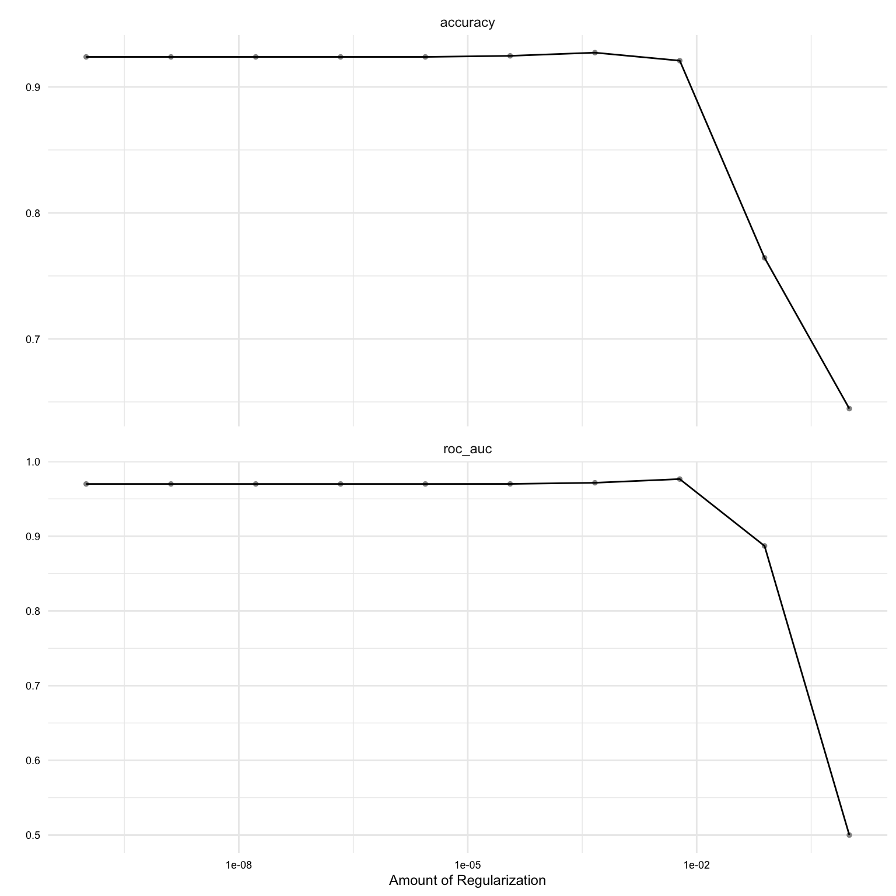
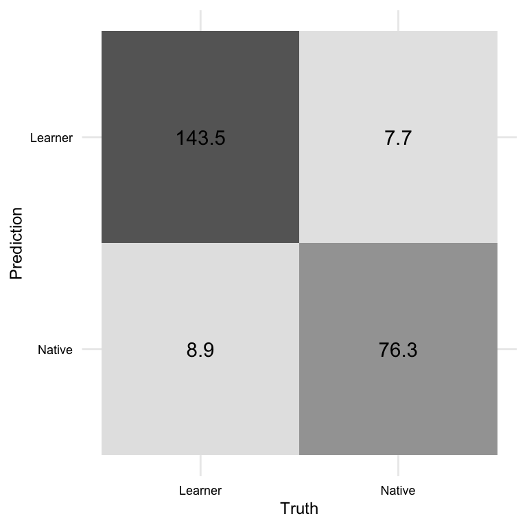
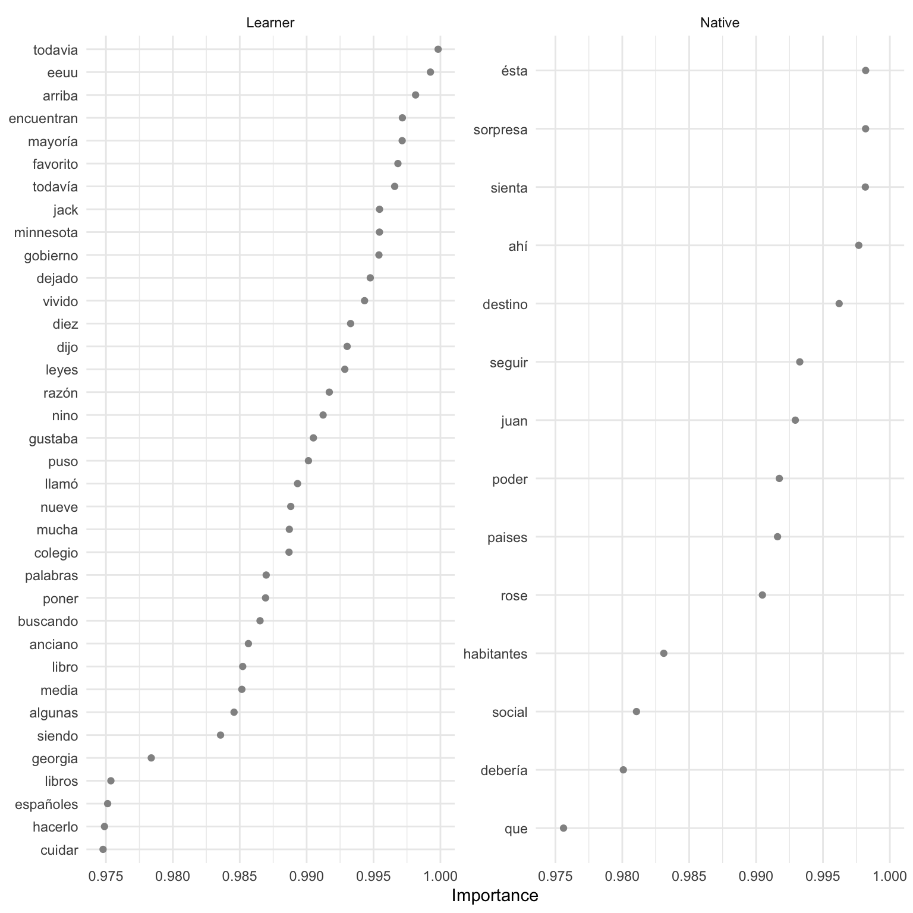
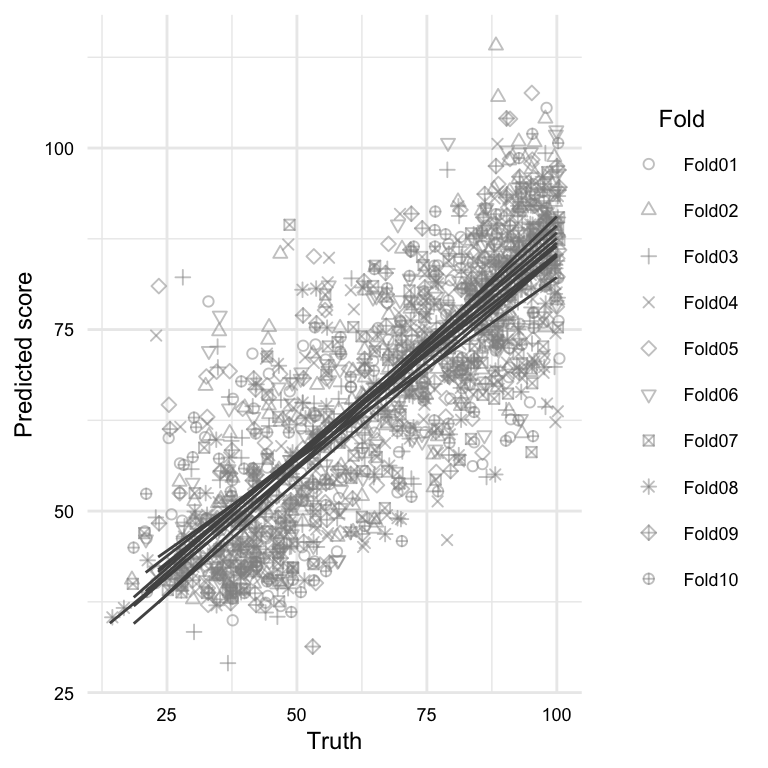

| variable | name | variable_type | description |
|---|---|---|---|
| doc_id | Document ID | numeric | Unique identifier for each document |
| subcorpus | Subcorpus | categorical | The subcorpus to which the document belongs (‘Learner’ or ‘Native’) |
| placement_score | Placement Score | numeric | The score obtained by the document author in a placement test. Null values indicate missing data (i.e. the document author did not take the placement test) |
| proficiency | Proficiency | ordinal | The level of language proficiency of the document author (‘Upper intermediate’, ‘Lower advanced’, ‘Upper beginner’, or ‘Native’) |
| text | Text | character | The written text provided by the document author |
9 Predict
All models are wrong, but some are useful.
— George E.P. Box
In this chapter, I introduce supervised learning as an approach to data analysis, specifically focusing on its applications in text analysis. Supervised learning aims to establish a relationship between a target (or outcome) variable and a set of feature variables derived from text data. By leveraging this relationship, statistical generalizations (models) can be created to accurately predict values of the target variable based on the values of the feature variables. Throughout the chapter, we explore practical tasks and theoretical applications of statistical learning in text analysis.
9.1 Orientation
Predictive data analysis (PDA) is a powerful analysis method for linguists and other researchers interested in making predictions about new or future data based on patterns in existing data. As discussed in Section 3.2.2 and Section 4.4.1, PDA is a type of supervised learning, which means that it involves training a model on a labeled dataset where the input data and desired output are both provided. The model is able to make predictions or classifications based on the input data by learning the relationships between the input and output data. Supervised machine learning is an important tool for linguists studying language and communication, as it allows us to analyze language data to identify patterns or trends in language use, assess hypotheses, and prescribe actions.
The approach to conducting predictive analysis shares some commonalities with exploratory data analysis (Section 8.1) (as well as inferential analysis Chapter 10), but there are also some key differences. Consider the workflow in Table 9.1.
| Step | Name | Description |
|---|---|---|
| 1 | Identify | Consider the research question and aim and identify relevant variables |
| 2 | Split the data into representative training and testing sets | |
| 3 | Apply variable selection and engineering procedures | |
| 4 | Inspect | Inspect the data to ensure that it is in the correct format and that the training and testing sets are representative of the data |
| 5 | Interrogate | Train and evaluate the model on the training set, adjusting models or hyperparameters as needed, to produce a final model |
| 6 | (Optional) Iterate | Repeat steps 3-5 to selecting new variables, models, hyperparameters |
| 7 | Interpret | Interpret the results of the final model in light of the research question or hypothesis |
Focusing on the overlap with other analysis methods, we can see some fundamentals steps such as identifying relevant variables, inspecting the data, interrogating the data, and interpreting the results. And if our research aim is exploratory in nature, iteration may also be a part of the workflow. These steps highlight the importance conducting methodologic and communicable research, as discussed in Section 4.1.
There are two main differences, however, between the PDA and the EDA workflow we discussed in Chapter 8. The first, reflected the majority of the steps in the workflow, is that PDA requires partitioning the data into training and testing sets. As discussed in Section 3.2.2, the training set is used to develop the model, and the testing set is used to evaluate the model’s performance. This strategy is used to ensure that the model is robust and generalizes well to new data. It is well known, and makes intuitive sense, that using the same data to develop and evaluate a model likely will not produce a model that generalizes well to new data. This is because the model will have potentially conflated the nuances of the data (‘the noise’) with any real trends (‘the signal’) and therefore will not be able to generalize well to new data. This is called overfitting and by holding out a portion of the data for testing, we can evaluate the model’s performance on data that it has not seen before and therefore get a more accurate estimate of the generalizable trends in the data.
Another procedure to avoid the perils of overfitting, is to use resampling methods as part of the model evaluation on the training set. Resampling is the process of repeatedly drawing samples from the training set and evaluating the model on each sample. The two most common resampling methods are bootstrapping (resampling with replacement) and cross-validation (resampling without replacement). The performance of these multiple models are summarized and the error between them is assessed. The goal is to minimize the performance differences between the models while maximizing the overall performance. These measures go a long way to avoiding overfitting and therefore maximizing the chance that the training phase will produce a model which is robust at the testing phase.
The second difference, not reflected in the workflow but inherent in predictive analysis, is that PDA requires a fixed outcome variable. This means that the outcome variable must be defined from the outset and cannot be changed during the analysis. Furthermore, the informational nature of the outcome variable will dictate the what type of algorithm we choose to interrogate the data and how we will evaluate the model’s performance.
If the outcome is categorical in nature, we will use a classification algorithm (e.g. logistic regression, naive bayes, etc.). Classification evaluation metrics include accuracy, precision, recall, and F1 score which can be derived from and visualized in a cross-tabulation of the predicted and actual outcome values.
If the outcome is numeric in nature, we will use a regression algorithm (e.g. linear regression, support vector regression, etc.). Since the difference between prediction and actual values is numeric, metrics that quantify numerical differences, such as root mean square error (RMSE) or \(R^2\), are used to evaluate the model’s performance.
The evaluation of the model is quantitative on the one hand, but it is also qualitative in that we need to consider the implications of the model’s performance in light of the research question or hypothesis. Furthermore, depending on our research question we may be interested in exploring the features that are most important to the model’s performance. This is called feature importance and can be derived from the model’s coefficients or weights. Notably, however, some of the most powerful models in use today, such as deep neural networks, are not easily interpretable and therefore feature importance is not easily derived. This is something to keep in mind when considering the research question and the type of model that will be used to address it.
9.2 Analysis
In this section, we now turn to the practical application of predictive data analysis. The discussion will be separated into classification and regression tasks, as model selection and evaluation procedures differ between the two. For each task, we will frame a research goal and work through the process of building a predictive model to address that goal. Along the way we will cover concepts and methods that are common to both classification and regression tasks and specific to each.
To frame our analyses, we will posit research aimed at identifying language usage patterns in second language use, one for a classification task and one for a regression task. Our first research question will be to assess whether we Spanish language use can be used to predict natives and L1 English learners (categorical). Our second research question will be to gauge the extent to which the the L1 English learners’ Spanish language placement test scores (numeric) can be predicted based on their language use.
We will use data from the CEDEL2 corpus. We will include a subset of the variables from this data that are relevant to our research questions. The data dictionary for this dataset is seen in Table 9.2.
Let’s go ahead and read the transformed dataset and preview it in Example 9.1.
Example 9.1
# Read in the dataset
cedel_tbl<-
read_csv("../data/cedel2/cedel2_transformed.csv")
# Preview
cedel_tbl |> glimpse()> Rows: 2,957
> Columns: 5
> $ doc_id <dbl> 1, 2, 3, 4, 5, 6, 7, 8, 9, 10, 11, 12, 13, 14, 15, 16,…
> $ subcorpus <chr> "Learner", "Learner", "Learner", "Learner", "Learner",…
> $ placement_score <dbl> 14.0, 16.3, 16.3, 18.6, 18.6, 18.6, 20.9, 20.9, 20.9, …
> $ proficiency <chr> "Lower beginner", "Lower beginner", "Lower beginner", …
> $ text <chr> "Yo vivo es Alanta, Georgia. Atlanta es muy grande ciu…The output of Example 9.1 provides some structural information about the dataset, number of rows and columns as well as variable types.
After I performed some diagnostics and made some adjustments, the dataset is in good order to proceed with the analysis. I updated the variables subcorpus and proficiency as factor variables and ordered them in a way that makes sense for the analysis. The placement_score variable is distributed well across the proficiency levels. The subcorpus variable is less balanced, with around 65% of the texts being from learners. This is not a problem, but it is something to keep in mind when building and interpreting the predictive models.
We will be using the tidymodels framework in R to perform these analyses. tidymodels is a metapackage, much like tidyverse, that provides a consistent interface for machine learning modeling. Some key packages unique to tidymodels are recipes, parsnip, workflows, and tune. recipes includes functions for preprocessing and engineering features. parsnip provides a consistent interface for specifying modeling algorithms. worflows allows us to combine recipes and models into a single pipeline. Finally, tune give us the ability to evaluate and tune hyperparameters of models.
Since we are using text data, we will also be using the textrecipes package which makes various functions available for preprocessing text including extracting and engineering features.
Let’s go ahead and do the setup, loading the necessary packages, seen in Example 9.2.
Example 9.2
# Load packages
library(tidymodels) # modeling metapackage
library(textrecipes) # text preprocessing
# Prefer tidymodels functions
tidymodels_prefer()Text classification
The goal of this analysis is to classify texts as either native or learner based on the writing samples in the dataset. This is a binary classification problem. We will approach this problem from an exploratory perspective, and therefore our aim is to identify features from the text that best distinguish between the two classes.
Let’s modify the data frame to include only the variables we need for this analysis, assigning it to cls_tbl. In the process, we will rename the subcorpus variable to outcome to reflect that it is the outcome variable. This is seen in Example 9.3.
Example 9.3
# Rename subcorpus to outcome
cls_tbl <-
cedel_tbl |>
select(outcome = subcorpus, proficiency, text)Let’s begin the workflow from Table 9.1 by identifying the features that we will use to classify the texts. There may be many features that we could use. These could be features derived from raw text (e.g. characters, words, n-grams, etc.), feature vectors (e.g. word embeddings), or meta-linguistic features (e.g. part-of-speech tags, syntactic parses, or semantic features) that have been derived from these through manual or automatic annotation.
If as part of our research question the types of features is included, then we should proceed toward deriving those features. If not, a simple approach is to use words as the predictor features. This will serve as a baseline for more complex models, if necessary.
This provides us the linguistic unit we will use but we still need to decide how to operationalize what we mean by ‘use’ in our research statement. Do we use raw token counts? Do we use normalized frequencies? Do we use some type of weighting scheme? These are questions that we need to consider as we embark on this analysis. Since we are exploring, we can use trial-and-error or consider the implications of each approach and choose the one that best fits our research question –or both.
Let’s approach this with a bit more nuance as we already have some domain knowledge about word use. First, we know that in the frequency distribution of words is highly skewed, meaning that a few words occur very frequently and most words occur very infrequently. Second, we know that the most frequent words in a language are often function words (e.g. ‘the’, ‘and’, ‘of’, etc.) and that these words are tend not very informative for distinguishing between classes of texts. Third, we know that comparing raw counts across texts conflates the influence text class lengths.
With these considerations in mind, we will tokenize the text into words and then use the term frequency-inverse document frequency (TF-IDF) weighting scheme to represent word use. This scheme will down weight words that are common across all documents and up weight words that are unique to a document. It also mitigates the varying lengths of the documents. This is a common approach in text classification and is a good starting point for our analysis.
With our features identified, we can move on to step 2 of our workflow and split the data into training and testing sets. We make the splits to our data at this point to draw a line in the sand between the data we will use to train the model and the data we will use to test the model. A typical approach in supervised machine learning is to allocate around 75-80% of the data to the training set and the remaining 20-25% to the testing set, depending on the number of observations. We have 2957 observations in our data set, so we can allocate 80% of the data to the training set and 20% of the data to the testing set.
In Example 9.4, we will use the initial_split() function from the rsample package to split the data into training and testing sets. The initial_split() function takes a data frame and a proportion and returns a split object which contains the training and testing sets. We will use the strata argument to stratify the data by the outcome variable. This will ensure that the training and testing sets have the same proportion of native and learner texts.
Example 9.4
# Set seed for reproducibility
set.seed(123)
# Split the data into training and testing sets
cls_split <-
initial_split(
data = cls_tbl,
prop = 0.8,
strata = outcome
)
# Create training set
cls_train <- training(cls_split) # 80% of data
# Create testing set
cls_test <- testing(cls_split) # 20% of dataA confirmation of the distribution of the data across the training and testing sets as well as a break down of the outcome variable, created by the janitor packages tabyl() function, can be seen in Example 9.5.
Example 9.5
# View the distribution
# Training set
cls_train |>
tabyl(outcome) |>
adorn_totals("row") |>
adorn_pct_formatting(digits = 1)> outcome n percent
> Learner 1524 64.5%
> Native 840 35.5%
> Total 2364 100.0%# Testing set
cls_test |>
tabyl(outcome) |>
adorn_totals("row") |>
adorn_pct_formatting(digits = 1)> outcome n percent
> Learner 382 64.4%
> Native 211 35.6%
> Total 593 100.0%We can see that the split was successful. The training and testing sets have very similiar proportion of native and learner texts.
We are now ready to create a ‘recipe’, step 3 in our analysis. A recipe is tidymodels terminology for a set of instructions or blueprint which specify the outcome variable and the predictor variable and determines how to preprocess and engineer the feature variables.
We will use the recipe() function from the recipes package to create the recipe. The recipe() function minimally takes a formula and a data frame and returns a recipe object. The formula specifies the outcome variable (\(y\)) and the predictor variable(s) (\(x_1 .. x_n\)). For example y ~ x can be read as “y as a function of x”. In our particular case, we will use the formula outcome ~ text to specify that the outcome variable is the outcome variable and the predictor variable is the text variable. The code is seen in Example 9.6.
Example 9.6
# Create a recipe
base_rec <-
recipe(
formula = outcome ~ text, # formula
data = cls_train
)
# Preview
base_rec── Recipe ─────────────────────────────────────────
── Inputs
Number of variables by role
outcome: 1
predictor: 1The recipe object at this moment contains just one instruction, what the variables are and what their relationship is.
The recipes package provides a wide range of step_*() functions which can be applied to the recipe to specify how to engineer the variables in our recipe call. These include functions to scale (e.g step_center(), step_scale(), etc.) and transform (e.g. step_log(), step_pca(), etc.) numeric variables, and functions to encode (e.g. step_dummy(), step_labelencode(), etc.) categorical variables.
These step functions are great when we have selected the variables we want to use in our model and we want to engineer them in a particular way. In our case, however, we need to derive features from the text in the text column of datasets before we engineer them.
To ease this process, the textrecipes package provides a number of step functions for preprocessing text data. These include functions to tokenize (e.g. step_tokenize()), remove stop words (e.g. step_stopwords()), and to derive meta-features (e.g. step_lemma(), step_stem(), etc.) 1. Furthermore, there are functions to engineer features in ways that are particularly relevant to text data, such as feature frequencies and weights (e.g. step_tf(), step_tfidf(), etc.) and token filtering (e.g. step_tokenfilter()).
So let’s build on our basic recipe cls_rec by adding steps relevant to our task. To extract our features, we will use the step_tokenize() function to tokenize the text into words. The default behavior of the step_tokenize() function is to tokenize the text into words, but other token units can be derived and various options can be added to the function call (as the tokenizers package is used under the hood). Adding the step_tokenize() function to our recipe is seen in Example 9.7.
Example 9.7
# Add step to tokenize the text
cls_rec <-
base_rec |>
step_tokenize(text) # tokenize
# Preview
cls_rec── Recipe ─────────────────────────────────────────
── Inputs
Number of variables by role
outcome: 1
predictor: 1
── Operations
• Tokenization for: textThe recipe object cls_rec now contains two instructions, one for the outcome variable and one for the feature variable. The feature variable instruction specifies that the text should be tokenized into words.
We now need to consider how to engineer the word features. If we add step_tf() we will get a matrix of token counts by default, with the option to specifiy other weights. The step function step_tfidf() creates a matrix of term frequencies weighted by inverse document frequency.
We decided in step 1 that we will start with \(tf\)-\(idf\), so we will add step_tfidf() to our recipe. This is seen in Example 9.8.
Example 9.8
# Add step to tokenize the text
cls_rec <-
cls_rec |>
step_tfidf(text, smooth_idf = FALSE)
# Preview
cls_rec── Recipe ─────────────────────────────────────────
Number of variables by role
outcome: 1
predictor: 1
── Operations
• Tokenization for: text
• Term frequency-inverse document frequency with: textTo make sure things are in order and that the recipe performs as expected, we can use the functions prep() and bake() to inspect the recipe. The prep() function takes a recipe object and a data frame and returns a prep object. The prep object contains the recipe and the data frame with the feature variables engineered according to the recipe. The bake() function takes a prep object and an optional new dataset to apply the recipe to. If we only want to see the application to the training set, we can use the new_data = NULL argument.
In Example 9.9, we use the prep() and bake() functions to create a data frame with the feature variables. We can then inspect the data frame to see if the recipe performed as expected.
Example 9.9
The resulting engineered features data frame has 2364 observations and 38115 variables. That is a lot of features! Given the the fact that for each writing sample, only a small subset of them will actually appear, most of our cells will be filled with zeros. This is a sparse matrix.
But we should pause. This is an unweildy number of features, on for every single word, for a model and it is likely that many of these features are not useful for our classification task. Furthermore, the more features we have, the more chance these features will capture the nuances of these particular writing samples increasing the likelihood we overfit the model. All in all, we need to reduce the number of features.
We can filter out features by stopword list or by frequency of occurrence. Let’s start by frequency of occurrence. We can set the maximum number of the top features with an arbitrary threshold to start. The step_tokenfilter() function can filters out features on a number of criteria. Let’s use the max_tokens argument to set the maximum number of features to 100.
This particular step needs to be applied before the step_tfidf() step, so we will add it to our recipe before the step_tfidf() step. This is seen in Example 9.10.
Example 9.10
# Rebuild recipe with tokenfilter step
cls_rec <-
base_rec |>
step_tokenize(text) |>
step_tokenfilter(text, max_tokens = 100) |>
step_tfidf(text, smooth_idf = FALSE)
# Prep and bake
cls_bake <-
cls_rec |>
prep() |>
bake(new_data = NULL)
# Preview
cls_bake |> dim()> [1] 2364 101cls_bake[1:5, 1:5]> # A tibble: 5 × 5
> outcome tfidf_text_a tfidf_text_ahora tfidf_text_al tfidf_text_amigos
> <fct> <dbl> <dbl> <dbl> <dbl>
> 1 Learner 0 0 0 0
> 2 Learner 0.00399 0 0 0
> 3 Learner 0.00615 0 0 0
> 4 Learner 0 0 0 0
> 5 Learner 0.0111 0 0 0We now have a manageable set of features, and fewer of which will have a as many zeros. Only during the interrogation step will we know if they are useful.
We are now ready to turn our attention to step 5 of our workflow, interrogating the data. In this step, we will first select a classification algorithm, then add this algorithm and our recipe to a workflow object. We will then use the workflow object to train and evaluate the model on the training set.
There are many classification algorithms to choose from with their own strengths and shortcomings. In Table 9.3, we list some of the most common classification algorithms and their characteristics.
| Algorithm | Strengths | Shortcomings | Tuning Recommendation |
|---|---|---|---|
| Logistic regression | Interpretable, fast, high-dimensional data | Linear relationship, not for complex tasks | Cross-validate regularization strength |
| Naive Bayes | Interpretable, fast, high-dimensional data, multi-class | Assumes feature (naive) independence, poor with small data | None |
| Decision trees | Nonlinear, interpretable, numerical/ categorical data | Overfitting, high variance | Cross-validate maximum tree depth |
| Random forest | Nonlinear, numerical/ categorical data, less overfitting | Less interpretable, poor with high-dimensional data | Cross-validate number of trees |
| Support vector machines | Nonlinear, high-dimensional data, numerical/ categorical | Requires parameter tuning, memory intensive | Cross-validate regularization parameter |
| Neural networks | Nonlinear, large data, auto feature learning | Overfitting, difficult to interpret, expensive | Cross-validate learning rate |
In the process of selecting an algorithm, simple, computationally efficient, and interpretable models are preferred over complex, computationally expensive, and uninterpretable models, all things being equal. Only if the performance of the simple model is not good enough should we move on to a more complex model.
With this end mind, we will start with a simple logistic regression model to see how well we can classify the texts in the training set with the features we have engineered. We will use the logistic_reg() function from the parsnip package to specify the logistic regression model. We then select the implementation engine (glmnet General Linear Model) and the mode of the model (classification). The implementation engine is the software that will be used to fit the model. The code to set up the model specification is seen in Example 9.11.
Example 9.11
# Create a model specification
cls_spec <-
logistic_reg() |>
set_engine("glmnet")
# Preview
cls_specLogistic Regression Model Specification (classification)
Computational engine: glmnetNow, different algorithms will have different hyperparameters that can be tuned which can affect the performance of the model (see Table 9.3). The process of hyperparameter tuning involves fitting the model to the training set with different hyperparameters and evaluating the model’s performance to determine the best hyperparameter values to use for the model.
For example, the logistic regression model using glmnet can be tuned to prevent overfitting. The regularization typically applied is the LASSO (L1) penalty2. The logistic_reg() function takes the arguments penalty and mixture. We set mixture = 1, but we now need to decide what value to use for the strength of the penalty argument. Values can range from 0 to 1, where 0 indicates no penalty and 1 indicates a maximum penalty.
Instead of guessing, we will use the tune package to tune the hyperparameters of the model. The tune() functions serves as a placeholder for the hyperparameters we want to tune. We can add the tune() function to our model specification to specify the hyperparameters we want to tune. The code is seen in Example 9.12.
Example 9.12
# Create a model specification (with tune)
cls_spec <-
logistic_reg(penalty = tune(), mixture = 1) |>
set_engine("glmnet")
# Preview
cls_specLogistic Regression Model Specification (classification)
Main Arguments:
penalty = tune()
mixture = 1
Computational engine: glmnetWe can see now that the cls_spec model specification now includes the tune() function as the value for the penalty argument.
To tune our model, we will need to combine our recipe and model specification into a workflow object. The workflow object will allow us to train and evaluate the model on the training set. We will use the workflow() function from the workflows package to combine the recipe and model specification into a workflow object. The code is seen in Example 9.13.
Example 9.13
# Create a workflow
cls_wf <-
workflow() |>
add_recipe(cls_rec) |>
add_model(cls_spec)
# Preview
cls_wf══ Workflow ═══════════════════════════════════════
Preprocessor: Recipe
Model: logistic_reg()
── Preprocessor ───────────────────────────────────
3 Recipe Steps
• step_tokenize()
• step_tokenfilter()
• step_tfidf()
── Model ──────────────────────────────────────────
Logistic Regression Model Specification (classification)
Main Arguments:
penalty = tune()
mixture = 1
Computational engine: glmnetWe now have a workflow cls_wf that includes the tune() function as a placeholder for a range of values for the penalty hyperparameter. We use the grid_regular() function from the dials package to specify a grid of values for the penalty hyperparameter. Let’s choose a random set of 10 values, as seen in Example 9.14.
Example 9.14
# Create a grid of values for the penalty hyperparameter
cls_grid <-
grid_regular(penalty(), levels = 10)
# Preview
cls_grid> # A tibble: 10 × 1
> penalty
> <dbl>
> 1 0.0000000001
> 2 0.00000000129
> 3 0.0000000167
> 4 0.000000215
> 5 0.00000278
> 6 0.0000359
> 7 0.000464
> 8 0.00599
> 9 0.0774
> 10 1The 10 values chosen to be in the grid range from nearly zero to 1, where 0 indicates no penalty and 1 indicates a strong penalty.
Now to perform the tuning and arrive at an optimal value for penalty we need to create a tuning workflow. We do this by calling the tune_grid() function using our tuning model specification workflow, a resampling object, and our hyperparameter grid and returns a tune_grid object.
Now, a resampling object is not something we’ve seen yet. Resampling is a strategy that allows us to generate multiple training and testing sets from a single data set –in this case the training data we split at the outset. Each variation of the training and testing sets is called a fold. Which is why this type of resampling is called k-fold cross-validation. The vfold_cv() function from the rsample package takes a data frame and a number of folds and returns a vfold_cv object. We will use 10 folds and include the model specification and the hyperparameter grid in the tune_grid() function call. The code is seen in Example 9.15.
Example 9.15
# Set seed for reproducibility
set.seed(123)
# Create a resampling object
cls_vfold <- vfold_cv(cls_train, v = 10)
# Tune the model
cls_tune <-
tune_grid(
cls_wf,
resamples = cls_vfold,
grid = cls_grid
)
# Preview
cls_tune> # Tuning results
> # 10-fold cross-validation
> # A tibble: 10 × 4
> splits id .metrics .notes
> <list> <chr> <list> <list>
> 1 <split [2127/237]> Fold01 <tibble [20 × 5]> <tibble [0 × 3]>
> 2 <split [2127/237]> Fold02 <tibble [20 × 5]> <tibble [0 × 3]>
> 3 <split [2127/237]> Fold03 <tibble [20 × 5]> <tibble [0 × 3]>
> 4 <split [2127/237]> Fold04 <tibble [20 × 5]> <tibble [0 × 3]>
> 5 <split [2128/236]> Fold05 <tibble [20 × 5]> <tibble [0 × 3]>
> 6 <split [2128/236]> Fold06 <tibble [20 × 5]> <tibble [0 × 3]>
> 7 <split [2128/236]> Fold07 <tibble [20 × 5]> <tibble [0 × 3]>
> 8 <split [2128/236]> Fold08 <tibble [20 × 5]> <tibble [0 × 3]>
> 9 <split [2128/236]> Fold09 <tibble [20 × 5]> <tibble [0 × 3]>
> 10 <split [2128/236]> Fold10 <tibble [20 × 5]> <tibble [0 × 3]>The cls_tune object contains the results of the tuning for each fold. We can see the results of the tuning for each fold by calling the collect_metrics() function on the cls_tune object, as seen in Example 9.16.
Example 9.16
# Collect the results of the tuning
cls_tune_metrics <-
collect_metrics(cls_tune)
# Visualize metrics
cls_tune |> autoplot()

The most common metrics for model performance in classification are accuracy and the area under the receiver operating characteristic curve (ROC-AUC). Accuracy is the proportion of correct predictions. The ROC-AUC is a measure of how well the model can distinguish between the two classes.
In the plot of the metrics, we can see that the many of the penalty values performed similarly, with a drop off in performance at the higher values. Conveniently, the show_best() function from the tune package takes a tune_grid object and returns the best performing hyperparameter values. The code is seen in Example 9.17.
Example 9.17
# Show the best performing hyperparameter value
cls_tune |>
show_best(metric = "roc_auc")> # A tibble: 5 × 7
> penalty .metric .estimator mean n std_err .config
> <dbl> <chr> <chr> <dbl> <int> <dbl> <chr>
> 1 0.000464 roc_auc binary 0.952 10 0.00487 Preprocessor1_Model07
> 2 0.00599 roc_auc binary 0.952 10 0.00344 Preprocessor1_Model08
> 3 0.0000000001 roc_auc binary 0.951 10 0.00502 Preprocessor1_Model01
> 4 0.00000000129 roc_auc binary 0.951 10 0.00502 Preprocessor1_Model02
> 5 0.0000000167 roc_auc binary 0.951 10 0.00502 Preprocessor1_Model03We can make this selection programmatically by using the select_best() function. This function needs a metric to select by. We will use the ROC-AUC and select the best value for the penalty hyperparameter. The code is seen in Example 9.18.
Example 9.18
# Select the best performing hyperparameter value
cls_best <-
select_best(cls_tune, metric = "roc_auc")
# Preview
cls_best> # A tibble: 1 × 2
> penalty .config
> <dbl> <chr>
> 1 0.000464 Preprocessor1_Model07All of that to tune a hyperparameter! Now we can update the model specification and workflow with the best performing hyperparameter value using the previous cls_wf_tune workflow and the finalize_workflow() function. The finalize_workflow() function takes a workflow and the selected parameters and returns an updated workflow object, as seen in Example 9.19.
Example 9.19
# Update model specification
cls_wf_lasso <-
cls_wf |>
finalize_workflow(cls_best)
# Preview
cls_wf_lasso══ Workflow ═══════════════════════════════════════
Preprocessor: Recipe
Model: logistic_reg()
── Preprocessor ───────────────────────────────────
• step_tokenize()
• step_tokenfilter()
• step_tfidf()
── Model ──────────────────────────────────────────
Logistic Regression Model Specification (classification)
Main Arguments:
penalty = 0.000464158883361278
mixture = 1
Computational engine: glmnetOur model specification and the worflow are updated with the tuned hyperparameter.
As a reminder we are still working in step 5 of our workflow, interrogating the data. So far we have selected and engineered the features, split the data into training and testing sets, and selected a classification algorithm. We have also tuned the hyperparameters of the model and updated the model specification and workflow with the best performing hyperparameter value.
The next step is to assess the performance of the model on the training set given the features we have engineered, the algorithm we have selected, and the hyperparameters we have tuned. Instead of evaluating the model on the training set directly, we will use cross-validation to gauge the variability of the model.
The reason for this is that the model’s performance on the training set is not a reliable indicator of the model’s performance on new data –just imagine if you were to take a test on the same material over and over again, you would get better and better at the test, but that doesn’t mean you’ve learned the material any better. Cross-validation is a technique that allows us to estimate the model’s performance on new data by simulating the process of training and testing the model on different subsets of the training data.
Similar to what we did to tune the hyperparameters, we can use cross-validation to gauge the variability of the model. The fit_resamples() function takes a workflow and a resampling object and returns metrics for each fold. The code is seen in Example 9.20.
Example 9.20
# Cross-validate workflow
cls_lasso_cv <-
cls_wf_lasso |>
fit_resamples(
resamples = cls_vfold,
# save predictions for confusion matrix
control = control_resamples(save_pred = TRUE)
)We want to aggregate the metrics across the folds to get a sense of the variability of the model. The collect_metrics() function takes the results of a cross-validation and returns a data frame with the metrics.
Example 9.21
# Collect metrics
cls_lasso_cv |> collect_metrics()> # A tibble: 2 × 6
> .metric .estimator mean n std_err .config
> <chr> <chr> <dbl> <int> <dbl> <chr>
> 1 accuracy binary 0.884 10 0.00554 Preprocessor1_Model1
> 2 roc_auc binary 0.952 10 0.00487 Preprocessor1_Model1From the metrics in Example 9.21 it appears we have a decent candidate model, but there is room for potential improvement. A good next step is to evaluate the model errors and see if there are any patterns that can be addressed before considering what approach to take to improve the model.
For classification tasks, a good place to start is to visualize a confusion matrix. A confusion matrix is a cross-tabulation of the predicted and actual outcomes. The conf_mat_resampled() function takes a fit_resamples object (with predictions saved) and returns a table (tidy = FALSE) with the confusion matrix for the aggregated folds. We can pass this to the autoplot() function to plot as in Example 9.22.
Example 9.22
# Plot confusion matrix
cls_lasso_cv |>
conf_mat_resampled(tidy = FALSE) |>
autoplot(type = "heatmap")

The top left to bottom right diagonal contains the true positives and true negatives, these are the correct predictions. The top right to bottom left diagonal contains the false positives and false negatives –our errors. The convention is speak of one class being the positive class and the other class being the negative class. In our case, we will consider the positive class to be the ‘learner’ class and the negative class to be the ‘natives’ class.
We can see that there are more learners falsely predicted to be natives than the other way around. This may be due to the fact that there are simply more learners than natives in the data set or this could signal that there are some learners that are more similar to natives than other learners. Clearly this can’t be the entire explanation as the model is not perfect, even some natives are classified falsely as learners! But may be an interesting avenue for further exploration. Maybe these are learners that are more advanced or have a particular style of writing that is more similar to natives.
To improve supervised learning models, one should consider a number of possibilities:
- Change the algorithm
- Select different (or additional) features
- Engineer the features differently
- Tune the hyperparameters differently
Of these options, adjusting the feature engineering features process is the option that diverges least from our current workflow cls_wf_lasso. Recall that in our recipe specification we set a token filter to limit the number of features to 100. We can adjust this number to see if it has an effect on the model’s performance.
To avoid help select the optimimal number of tokens, we again can use the tuning process we explored for the hyperparameters. This time, however, the tune() placeholder will be included as the argument to the max_tokens argument in the step_tokenfilter() function.
I repeat the recipe with the tuning placeholder in Example 9.23.
Example 9.23
# Create a recipe with a token filter step
cls_rec <-
recipe(
formula = outcome ~ text,
data = cls_train
) |>
step_tokenize(text) |>
step_tokenfilter(text, max_tokens = tune()) |>
step_tfidf(text)With the updated recipe, we can update the cls_wf_lasso and tune the max_tokens hyperparameter. The code is seen in Example 9.24.
Example 9.24
# Update workflow with token filter tuning
cls_wf_lasso <-
cls_wf_lasso |>
update_recipe(cls_rec)One thing to note is that we will want to consider what values of max_tokens we want to use to tune the hyperparameter. So instead of only specifying the levels in the grid_regular() function, we are best off to provide a range of values that we think are reasonable. Let’s add a range of values between our current value 100 and 2000 to start. And let’s tell the grid to select 5 values from this range.
The code is seen in Example 9.25.
Example 9.25
# Create a grid of values for the max tokens hyperparameter
cls_grid <-
grid_regular(max_tokens(range = c(100, 2000)), levels = 5)
# Preview
cls_grid> # A tibble: 5 × 1
> max_tokens
> <int>
> 1 100
> 2 575
> 3 1050
> 4 1525
> 5 2000From here, the process is the same as before. We will use the tune_grid() function to tune the max_tokens hyperparameter, select the best value, and finalize the workflow, as seen from Example 9.15 through Example 9.19.
After tuning the max_tokens hyperparameter, the best performing value is 1050. We now used the updated cls_wf_lasso_tokens workflow to cross-validate the model and collect the metrics. The code is seen in Example 9.26.
Example 9.26
# Cross-validate workflow
cls_lasso_tokens_cv <-
cls_wf_lasso_tokens |>
fit_resamples(
resamples = cls_vfold,
# save predictions for confusion matrix
control = control_resamples(save_pred = TRUE)
)
# Collect metrics
cls_lasso_tokens_cv |>
collect_metrics()> # A tibble: 2 × 6
> .metric .estimator mean n std_err .config
> <chr> <chr> <dbl> <int> <dbl> <chr>
> 1 accuracy binary 0.918 10 0.00555 Preprocessor1_Model1
> 2 roc_auc binary 0.968 10 0.00289 Preprocessor1_Model1The metrics from Example 9.26 show that the model’s performance has improved for both the accuracy and the ROC-AUC. The confusion matrix from Example 9.27 shows that the number of false positives and false negatives has decreased. This is a good sign that the model is more robust.
Example 9.27
# Plot confusion matrix
cls_lasso_tokens_cv |>
conf_mat_resampled(tidy = FALSE) |>
autoplot(type = "heatmap")
It appears that the model is more robust with the updated max_tokens hyperparameter. We could continue to explore other model improvement strategies, but for now we will move on to the next step in our workflow.
We are now ready to move on to step 7, evaluating the model on the test set. To do this we need to fit the tuned workflow to the training set, which is the actual training phase. We will use the last_fit() function from the workflows package to fit the workflow to the training set. The last_fit() function takes a workflow and a split object and returns a last_fit object. The last_fit object contains the results of the model fit on the training set and the results of the model evaluation on the test set. The code is seen in Example 9.28.
We will use the last_fit() function to train the final model and predict the outcome on the test set. The collect_metrics() function takes a data frame with the actual and predicted outcomes and returns a data frame with the metrics for the model. The code is seen in Example 9.28.
Example 9.28
# Fit the model to the training set and
# evaluate on the test set
cls_final_fit <-
last_fit(
cls_wf_lasso_tokens,
split = cls_split
)
# Evaluate model on testing set
cls_final_fit |>
collect_metrics()> # A tibble: 2 × 4
> .metric .estimator .estimate .config
> <chr> <chr> <dbl> <chr>
> 1 accuracy binary 0.909 Preprocessor1_Model1
> 2 roc_auc binary 0.962 Preprocessor1_Model1The performance metrics are very close to those we achieved on the training set in Example 9.26. This is a good sign that the model is robust as it performs well on both training and test sets. We can evaluate the confusion matrix on the test set as well. The code is seen in Example 9.29.
Example 9.29
# Plot confusion matrix
cls_final_fit |>
collect_predictions() |>
conf_mat(truth = outcome, estimate = .pred_class) |>
autoplot(type = "heatmap")On the test set the false instances are balanced, which is a good sign that the model is robust. Ideally, there would be no errors, but this is not realistic. The model is not perfect, but it is useful.
Now a model that can predict the nativeness of a writer based on their writing sample is a useful tool in itself. You could imagine that this could be a preprocessing step for a language learning application, for example. But for a study that is more interested in learning about what features are most important for predicting the native versus non-native features of a writer, we still have some work to do. We can inspect the errors on the test set to gain some insight into what writing samples, and which proficiency levels of the writers, are most difficult to predict. We can also inspect the estimates for the features in the model to gain some insight into what features are most important for predicting the outcomes.
Let’s first approach this from a document-proficiency point of view. First, we will want to integrate the predictions with the test set to inspect the errors. We can use the collect_predictions() function to collect the predictions from the last_fit object and attach them with the test set cls_test with bind_cols. Note, we can drop the outcome variable from cls_test as we have this column in our fitted model. The code is seen in Example 9.30.
Example 9.30
# Collect predictions from the model
cls_lasso_fit_preds_test <-
cls_final_fit |>
collect_predictions() |>
bind_cols(cls_test[, -1])
# Preview
glimpse(cls_lasso_fit_preds_test)> Rows: 593
> Columns: 9
> $ id <chr> "train/test split", "train/test split", "train/test spli…
> $ .pred_Learner <dbl> 1.0000, 1.0000, 1.0000, 0.0996, 1.0000, 0.9928, 1.0000, …
> $ .pred_Native <dbl> 9.59e-06, 1.13e-05, 3.16e-09, 9.00e-01, 2.83e-06, 7.17e-…
> $ .row <int> 3, 7, 15, 21, 22, 25, 36, 43, 47, 50, 53, 57, 62, 66, 68…
> $ .pred_class <fct> Learner, Learner, Learner, Native, Learner, Learner, Lea…
> $ outcome <fct> Learner, Learner, Learner, Learner, Learner, Learner, Le…
> $ .config <chr> "Preprocessor1_Model1", "Preprocessor1_Model1", "Preproc…
> $ proficiency <fct> Lower beginner, Lower beginner, Lower beginner, Lower be…
> $ text <chr> "Sanaa Lathan es muy famosa persona. Ella es en de telev…I will then select the columns with the actual outcome, the predicted outcome, the proficiency level, and the text and separate the predicted outcome to inspect them separately, as seen in Example 9.31.
Example 9.31
# Inspect errors
cls_lasso_fit_preds_test |>
filter(outcome != .pred_class) |>
select(outcome, .pred_class, proficiency, text)> # A tibble: 54 × 4
> outcome .pred_class proficiency text
> <fct> <fct> <fct> <chr>
> 1 Learner Native Lower beginner "Un día un pequeño nino fue dado una …
> 2 Learner Native Upper beginner "Un dia, El niño estaba durmiendo cua…
> 3 Learner Native Upper beginner "Yo vivo en la ciudad de Atlanta. En …
> 4 Learner Native Upper beginner "Hola me llamo Jason.\n Mis amigos es…
> 5 Learner Native Lower intermediate "Recientemente vi una película que es…
> 6 Learner Native Upper intermediate "Vivo en la ciudad de Richmond en Vir…
> 7 Learner Native Upper intermediate "A la semana pasada, yo vi la pelicul…
> 8 Learner Native Upper intermediate "Un día decidí llevarme a casa una ra…
> 9 Learner Native Lower advanced "Bueno, el año pasado mi novia y yo v…
> 10 Learner Native Lower advanced "Un día Pablo, un niño de 6 años, enc…
> # ℹ 44 more rows# Inspect learners falsely predicted to be natives
cls_lasso_fit_preds_test |>
filter(outcome == "Learner", .pred_class == "Native") |>
select(outcome, .pred_class, proficiency, text) |>
count(proficiency, sort = TRUE)> # A tibble: 6 × 2
> proficiency n
> <fct> <int>
> 1 Upper advanced 10
> 2 Lower advanced 9
> 3 Upper beginner 3
> 4 Upper intermediate 3
> 5 Lower beginner 1
> 6 Lower intermediate 1Majority of misclassified learners are advanced, which could be expected as they are more similar to natives. There are some beginners that are misclassified as natives, but this is not as common.
Still an open question as to why some natives are classified as learners.
We can inspect the estimates for the features in the model to gain some insight into what features are most important for predicting the outcomes. The extract_fit_parsnip() function takes a trained model specification cls_final_fit and returns a data frame with the estimated coefficients for each feature. The code is seen in Example 9.32.
Example 9.32
# Extract estimates
cls_final_fit_features <-
cls_final_fit |>
extract_fit_parsnip() |>
tidy()The estimates are the log odds of the outcome. In a binary classification task, the log odds of the outcome is the log of the probability of the outcome divided by the probability of the other outcome. In our case, the reference outcome is “Learner”, so negative log-odds indicate that the feature is associated with the “Learner” outcome and positive log-odds indicate that the feature is associated with the “Native” outcome.
The estimates are in log-odds, so we need to exponentiate them to get the odds. The odds are the probability of the outcome divided by the probability of the other outcome. The probability of the outcome is the odds divided by the odds plus one. The code is seen in Example 9.33.
Example 9.33
# Calculate probability
cls_final_fit_features |>
mutate(probability = exp(estimate) / (exp(estimate) + 1))> # A tibble: 1,051 × 4
> term estimate penalty probability
> <chr> <dbl> <dbl> <dbl>
> 1 (Intercept) -13.6 0.000464 0.00000129
> 2 tfidf_text_10 0 0.000464 0.5
> 3 tfidf_text_2 0 0.000464 0.5
> 4 tfidf_text_3 0 0.000464 0.5
> 5 tfidf_text_4 0 0.000464 0.5
> 6 tfidf_text_5 0 0.000464 0.5
> 7 tfidf_text_a 64.9 0.000464 1
> 8 tfidf_text_abandonado 7.02 0.000464 0.999
> 9 tfidf_text_abuela -8.64 0.000464 0.000176
> 10 tfidf_text_abuelos 2.14 0.000464 0.895
> # ℹ 1,041 more rowsSo just looking at the snippet of the features returned from Example 9.33, we can see that the features ‘a’ and ‘abandonado’ are associated with the “Native” outcome, ‘abuela’ is associated with “Learners”, and the other features are neutral (probability = 0.5).
A quick way to extract the most important features for predicting the each outcome is to use the vi() function from the vip package. It takes a trained model specification and returns a data frame with the most important features. The code is seen in Example 9.34.
Example 9.34
# Load package
library(vip)
# Avoid conflicts for function names from other packages
conflicted::conflicts_prefer(vip::vi)
# Extract important features
var_importance_tbl <-
cls_final_fit |>
extract_fit_parsnip() |>
vi()
# Preview
var_importance_tbl> # A tibble: 1,050 × 3
> Variable Importance Sign
> <chr> <dbl> <chr>
> 1 tfidf_text_época 354. POS
> 2 tfidf_text_mayoría 320. NEG
> 3 tfidf_text_ésta 312. POS
> 4 tfidf_text_ante 278. POS
> 5 tfidf_text_proximo 274. NEG
> 6 tfidf_text_esperar 245. NEG
> 7 tfidf_text_mucha 244. NEG
> 8 tfidf_text_seguir 242. POS
> 9 tfidf_text_poder 241. POS
> 10 tfidf_text_ahí 235. POS
> # ℹ 1,040 more rowsThe Variable column contains each feature (with the feature type and corresponding variable tfidf_text_), Importance provides the absolute log-odds value, and the Sign column indicates whether the feature is associated with the “NEG” (“Learner”) or the “POS” (“Native”) outcome. We can recode the Variable and Sign columns to make them more interpretable and then plot them using ggplot(), as in Example 9.35.
Example 9.35
# Recode variable and sign
var_importance_tbl <-
var_importance_tbl |>
mutate(
Feature = str_remove(Variable, "tfidf_text_"),
Outcome = case_when(
Sign == "NEG" ~ "Learner",
Sign == "POS" ~ "Native"),
) |>
select(Outcome, Feature, Importance)
# Plot
var_importance_tbl |>
slice_max(Importance, n = 50) |>
ggplot(aes(x = reorder(Feature, Importance), y = Importance)) +
geom_point() +
coord_flip() +
facet_wrap(~ Outcome, scales = "free_y") +
labs(x = NULL, y = "Importance", fill = NULL) +
theme_minimal()

We can inspect Figure 9.5, and qualitatively assess what these features may be telling us about the differences between the learners and the natives.
In this section, we’ve build a text classifier using a regularized logistic regression model. We’ve tuned the hyperparameters to arrive at a robust model that performs well on both the training and test sets. We’ve also evaluated the model errors and inspected the most important features for predicting the outcome.
Text regression
We will now turn our attention to the second task in this section, text regression. In this task, we will use the same original dataset as in the classification task, but we will predict the placement score based on the learner writing samples. I will make reference to but not repeat the steps we took in the classification task, as many of the steps are the same. This is one of the benefits of using tidymodels –the workflow is by-and-large the same for different tasks.
Let’s start by extracting the observations (only learners) and the relevant variables from the original data set. The code is seen in Example 9.36.
Example 9.36
# Extract observations and relevant variables
reg_tbl <-
cedel_tbl |>
filter(proficiency != "Native") |>
select(outcome = placement_score, proficiency, text)
# Preview
reg_tbl |> glimpse()> Rows: 1,906
> Columns: 3
> $ outcome <dbl> 14.0, 16.3, 16.3, 18.6, 18.6, 18.6, 20.9, 20.9, 20.9, 20.9…
> $ proficiency <fct> Lower beginner, Lower beginner, Lower beginner, Lower begi…
> $ text <chr> "Yo vivo es Alanta, Georgia. Atlanta es muy grande ciudad.…In this task, our outcome variable is numeric and our predictor variable text is the same as before. It might be useful to engineer the features differently, but we will start with the same feature engineering process as before, namely the term frequency - inverse document frequency method (\(tf\)-\(idf\)) for the top 1,050 words.
With this assumption about the features, let’s move to step 2, initial split. We will use the initial_split() function again, but this time we will not need to stratify the data as we are not predicting a categorical variable. The code is seen in Example 9.37.
Example 9.37
# Set seed for reproducibility
set.seed(123)
# Split data
reg_split <-
initial_split(reg_tbl, prop = 0.8)
# Training set
reg_train <-
training(reg_split)
# Test set
reg_test <-
testing(reg_split)The training set has 1524 observations and the test set has 382 observations.
Now we can create the recipe to set up the variable relations, select the features, and engineer the features. The code is seen in Example 9.38.
Example 9.38
# Create a recipe
reg_rec <-
recipe(outcome ~ text, data = reg_train) |>
step_tokenize(text) |>
step_tokenfilter(text, max_tokens = 1050) |>
step_tfidf(text, smooth_idf = FALSE)At this point we would inspect our recipe to make sure that it looks as expected and gauge the number of features. But since are using the same recipe as before, we can skip this step.
We can now proceed to interrogate the data. As before we will want to start with a simple model and then build up to more complex models. The list in Table 9.3, includes algorithms that are commonly used in classification tasks. Interestingly, many of these same algorithms can be applied to regression. One exception is that instead of logistic regression, linear regressions is used for numeric outcomes.
As with logistic regressionn, linear regression model is one of the simpler models. And just as with logistic regression, we will want to tune the regularlization hyperparameter of the linear regression model. Instead of detailing these steps again, let me summarize the process, in Table 9.4, and then we will discuss the results from the regularized linear regression model.
| Step | Description |
|---|---|
| 1 | Build a model specification with a placeholder to tune the model. |
| 2 | Create a workflow with the recipe and the model specification. |
| 3 | Create a grid of values for the regularization hyperparameter. |
| 4 | Tune the model using cross-validation. |
| 5 | Select the best performing hyperparameter value. |
| 6 | Update the model specification and workflow with the best performing hyperparameter value. |
| 7 | Fit the model to the training set and evaluate the performance using cross-validation. |
Applying the steps 1-7 we have cross-validated results for our model in the reg_lasso_cv object. We can collect the metrics and inspect the RMSE and \(R^2\) values. The code is seen in Example 9.39.
Example 9.39
# Collect metrics
reg_lasso_cv |> collect_metrics()> # A tibble: 2 × 6
> .metric .estimator mean n std_err .config
> <chr> <chr> <dbl> <int> <dbl> <chr>
> 1 rmse standard 14.1 10 0.269 Preprocessor1_Model1
> 2 rsq standard 0.621 10 0.0119 Preprocessor1_Model1Now, the Root Mean Squared Error (RMSE) estimate is 14.1. RMSE is expressed in the same units as the outcome variable. In this case, the outcome variable is the placement test score percent. So the RMSE is 14.1 percentage points. The \(R^2\) (rsq) is 0.621. This means that the model explains 62% of the variance in the outcome variable. Taken together, this isn’t the best model.
But how good or bad is it? This is where we can use the null model to compare the model to. The null model is a model that predicts the mean of the outcome variable for each of the outcomes. We can use the null_model() function to create a null model and submit it to cross-validation. The code is seen in Example 9.40.
Example 9.40
# Create null model
null_model <-
null_model() |>
set_engine("parsnip") |>
set_mode("regression")
# Cross-validate null model
null_cv <-
workflow() |>
add_recipe(reg_rec) |>
add_model(null_model) |>
fit_resamples(
resamples = vfold_cv(reg_train, v = 10),
metrics = metric_set(rmse)
)
# Collect metrics
null_cv |> collect_metrics()> # A tibble: 1 × 6
> .metric .estimator mean n std_err .config
> <chr> <chr> <dbl> <int> <dbl> <chr>
> 1 rmse standard 22.6 10 0.203 Preprocessor1_Model1Our regression model performs better than the null model (22.6) which means that it is picking up on some signal in the data.
Let’s visualize the distribution of the predictions and the errors from our model to see if there are any patterns of interest. We can use the collect_predictions() function to extract the predictions of the cross-validation and plot the true outcome against the predicted outcome using ggplot(), as in Example 9.41.
Example 9.41
# Visualize predictions
reg_lasso_cv |>
collect_predictions() |>
ggplot(aes(outcome, .pred, shape = id)) +
geom_point(alpha = 0.5, position = position_jitter(width = 0.5)) +
geom_smooth(method = "lm", se = FALSE, linewidth = 0.5) + # trend for each fold
labs(
x = "Truth",
y = "Predicted score",
shape = "Fold"
)

From Figure 9.6, we see data points for each predicted and truth value pair for each of the ten folds. There is a trend line for each fold which shows the linear relationship between the predicted and truth values for each fold. The trend lines are more similar than different, which is a good sign that the model is not wildly overfitting the training data. Looking closer, however, we can see the errors. Some are noticeably distant from the linear trend lines, i.e. outliers, in particular for test scores in the lower ranges.
If the \(R^2\) value is in the ballpark, this means that somewhere around 40% of the variation is not explained by the frequency of the top 1,050 words. This is not surprising, as there are many other factors that contribute to the proficiency level of a text.
We have a model that is performing better than the null model, but it is not performing well enough to be very useful. We will need to update the model specification and/ or the features to try to improve the model fit. Let’s start with the model. There are many different model specifications we could try, but we will likely need to use a more complex model specification to capture the complexity that we observe in the errors from the current linear regression model.
Let’s try a decision tree model. Decision trees are models that are able to model non-linear relationships and interactions between the features and the outcome and tend to be less influenced by outliers. Furthermore, decision trees are interpretable, which is a nice feature for an exploratory-oriented analysis. These are all desirable characteristics. Decision trees, however, can be prone to overfitting. For this reason, we will tune the maximum depth of the tree to minimize overfitting.
To implement a new model in tidymodels, we need to create a new model specification and a new workflow. We will use the decision_tree() function from the parsnip package to create the model specification. The decision_tree() function takes a tree_depth argument that we want to tune. We create the new model specification with the tuning placeholder in Example 9.42.
Example 9.42
# Create model specification
reg_spec <-
decision_tree(tree_depth = tune()) |>
set_engine("rpart") |>
set_mode("regression")
# Preview
reg_specDecision Tree Model Specification (regression)
Main Arguments:
tree_depth = tune()
Computational engine: rpartWith the model and tuning specification in place, we can now continue through the steps outlined in Table 9.4 for this decision tree model.
# Create a workflow
reg_wf <-
workflow() |>
add_recipe(reg_rec) |>
add_model(reg_spec)
# Create a grid of values for the tree depth hyperparameter
reg_grid <-
grid_regular(tree_depth(), levels = 10)
# Create the cross-validation folds
reg_vfold <- vfold_cv(reg_train, v = 10)
# Set seed for reproducibility
set.seed(123)
# Create tuning workflow
reg_tune <-
tune_grid(
reg_wf,
resamples = reg_vfold,
grid = reg_grid
)
# Select best parameter
chosen_depth <- reg_tune |> select_best(metric = "rmse")
# Update workflow
reg_wf_tree <-
reg_wf |>
finalize_workflow(chosen_depth)
# Cross-validated workflow
reg_tree_cv <-
reg_wf_tree |>
fit_resamples(
resamples = reg_vfold,
control = control_resamples(save_pred = TRUE)
)We can collect the metrics and inspect the RMSE and \(R^2\) values. The code is seen in Example 9.43.
Example 9.43
# Collect metrics
reg_tree_cv |> collect_metrics()> # A tibble: 2 × 6
> .metric .estimator mean n std_err .config
> <chr> <chr> <dbl> <int> <dbl> <chr>
> 1 rmse standard 15.9 10 0.256 Preprocessor1_Model1
> 2 rsq standard 0.510 10 0.0210 Preprocessor1_Model1The performance for the decision tree is worse than the regularized linear regression model. The RSME is 15.9 and the \(R^2\) is 0.51. And, if we compare the standard error between the two models, we can see that the decision tree model has a lower standard error. This means that the decision tree model is likely overfitting.
Given the sensitivity of the decision tree branching process and random initialization, it is possible that the decision tree model is capturing too much nuance, and not enough generalities. Re-running the model with a different seed may result in a different model. This is a limitation with decision tree models, but it is also a feature, if we consider combining multiple decision trees to make a prediction. This is the basis of ensemble models. An ensemble model is a model that combines multiple models with the goal to draw out the strengths of each model and minimize the weaknesses.
A random forest is an ensemble model that combines multiple decision trees to make a prediction. In addition, random forests also perform random feature selection. This helps to reduce the correlation between the decision trees and thus works to reduce the overall variance of the model.
Let’s try a random forest model to address our text regression task. We will use the rand_forest() function from the parsnip package to create the model specification. The rand_forest() function also takes a hyperparameter for the number of trees to be used in the model. We will select the ranger engine. Additionally, we will add the importance argument to ensure that we can extract feature importance if this model proves to be useful. We create the new model specification in Example 9.44.
Example 9.44
# Create model specification
reg_spec <-
rand_forest(trees = tune()) |>
set_engine("ranger", importance = "impurity") |>
set_mode("regression")
# Preview
reg_specRandom Forest Model Specification (regression)
Main Arguments:
trees = tune()
Engine-Specific Arguments:
importance = impurity
Computational engine: rangerAgain, we apply the steps in Table 9.4 to build and tune the random forest model. For transparency, I will limit the range of the number of trees from 100 to 500 in five levels.
# Create a workflow
reg_wf <-
workflow() |>
add_recipe(reg_rec) |>
add_model(reg_spec)
# Create a grid of values for the number of trees hyperparameter
reg_grid <-
grid_regular(trees(range = c(250, 750)), levels = 5)
# Create the cross-validation folds
reg_vfold <- vfold_cv(reg_train, v = 10)
# Set seed for reproducibility
set.seed(123)
# Create tuning workflow
reg_tune <-
tune_grid(
reg_wf,
resamples = reg_vfold,
grid = reg_grid
)
# Select best parameter
chosen_trees <- reg_tune |> select_best(metric = "rmse")
# Update workflow
reg_wf_rf <-
reg_wf |>
finalize_workflow(chosen_trees)
# Cross-validated workflow
reg_rf_cv <-
reg_wf_rf |>
fit_resamples(
resamples = reg_vfold,
control = control_resamples(save_pred = TRUE)
)Let’s collect the metrics and inspect the RMSE and \(R^2\) values. The code is seen in Example 9.45.
Example 9.45
# Collect metrics
reg_rf_cv |> collect_metrics()> # A tibble: 2 × 6
> .metric .estimator mean n std_err .config
> <chr> <chr> <dbl> <int> <dbl> <chr>
> 1 rmse standard 12.9 10 0.320 Preprocessor1_Model1
> 2 rsq standard 0.697 10 0.0164 Preprocessor1_Model1The random forest model performs better than the decision tree model and the regularized linear regression model. The RSME is 12.9 and the \(R^2\) is 0.697. We also see that the standard error falls between the models we have tried so far.
Before we settle on this model, let’s try one more model. In this case, we will introduce a neural network model. Neural networks are models that are able to model non-linear relationships and interactions between the features and the outcome. They are also able to model complex relationships between the features and the outcome. We will use the mlp() function from the parsnip package to create the model specification. We will choose the brulee engine which allows us to tune the learning rate. The learning rate is a hyperparameter that controls the size of the steps that the model takes to update the weights.
We create the new model specification with the tuning placeholder in Example 9.46.
Example 9.46
# Create model specification
reg_spec <-
mlp(learn_rate = tune()) |>
set_engine("brulee") |>
set_mode("regression")
# Preview
reg_specSingle Layer Neural Network Model Specification (regression)
Main Arguments:
learn_rate = tune()
Computational engine: brulee
Model fit template:
brulee::brulee_mlp(x = missing_arg(), y = missing_arg(), learn_rate = tune())# Create a workflow
reg_wf <-
workflow() |>
add_recipe(reg_rec) |>
add_model(reg_spec)
# Create a grid of values for the learning rate hyperparameter
reg_grid <-
grid_regular(learn_rate(), levels = 10)
# Create the cross-validation folds
reg_vfold <- vfold_cv(reg_train, v = 10)
# Set seed for reproducibility
set.seed(123)
# Create tuning workflow
reg_tune <-
tune_grid(
reg_wf,
resamples = reg_vfold,
grid = reg_grid
)
# Select best parameter
chosen_learn_rate <- reg_tune |> select_best(metric = "rmse")
# Update workflow
reg_wf_mlp <-
reg_wf |>
finalize_workflow(chosen_learn_rate)
# Cross-validated workflow
reg_mlp_cv <-
reg_wf_mlp |>
fit_resamples(
resamples = reg_vfold,
control = control_resamples(save_pred = TRUE)
)Let’s collect the metrics and inspect the RMSE and \(R^2\) values. The code is seen in Example 9.47.
Example 9.47
# Collect metrics
reg_mlp_cv |> collect_metrics()> # A tibble: 2 × 6
> .metric .estimator mean n std_err .config
> <chr> <chr> <dbl> <int> <dbl> <chr>
> 1 rmse standard 16.8 10 1.53 Preprocessor1_Model1
> 2 rsq standard 0.474 10 0.0857 Preprocessor1_Model1So in summary, we’ve tried four different model specifications. The regularized linear regression model, the decision tree model, the random forest model, and the neural network model. The random forest model performed the best. For each of these models, however, we have only tried word features measured by \(tf\)-\(idf\). We could imagine that the performance of these models could be improved by varying the features to include bigrams, for example. We could also explore different measures of word usage. Furthermore, for some of our models, we could try different engines and/ or hyperparameters (some have more than one!).
We could continue to try to explore these possible combinations, and you likely would in your research. But at this point we have a model that is performing better than the null model and is performing better than the other models we have tried. So we will consider this model to be good enough for our purposes.
Let’s take our Random Forest model, fit it to our training data, apply it to the testing data, and collect the metrics on the test set. The code is seen in Example 9.48.
Example 9.48
# Fit the model to the training set and
# evaluate on the test set
reg_final_fit <-
last_fit(
reg_wf_rf,
split = reg_split
)
# Evaluate model on testing set
reg_final_fit |> collect_metrics()> # A tibble: 2 × 4
> .metric .estimator .estimate .config
> <chr> <chr> <dbl> <chr>
> 1 rmse standard 12.9 Preprocessor1_Model1
> 2 rsq standard 0.690 Preprocessor1_Model1Ok. The difference between the cross-validated metrics and the metrics for the test set differ –but only slightly. This suggests that the model is robust and that we have not overfit the data from the training set.
Now, our likely goal as an academic is to understanding something about the features that contribute to the performance of the model. So let’s approach extracting feature importance from the Random Forest model we build with the ranger engine. Remember, we added an importance argument to the set_engine() function and set it to ‘impurity’. We can now take advantage by using the vip package to extract the feature importance. The code is seen in Example 9.49.
Example 9.49
# Extract feature importance
reg_vip <-
reg_final_fit |>
extract_fit_parsnip() |>
vi(scale = TRUE)
# Preview
reg_vip |>
slice_head(n = 10)> # A tibble: 10 × 2
> Variable Importance
> <chr> <dbl>
> 1 tfidf_text_que 100
> 2 tfidf_text_es 64.6
> 3 tfidf_text_del 44.4
> 4 tfidf_text_pero 43.6
> 5 tfidf_text_por 41.4
> 6 tfidf_text_se 39.6
> 7 tfidf_text_una 39.5
> 8 tfidf_text_para 34.1
> 9 tfidf_text_más 30.2
> 10 tfidf_text_los 28.0We can now visualize the feature importance of the model. The code is seen in Example 9.50.
Example 9.50
# Extract predictions
reg_vip |>
mutate(Variable = str_replace(Variable, "^tfidf_text_", "")) |>
slice_max(Importance, n = 20) |>
# reorder variables by importance
ggplot(aes(reorder(Variable, Importance), Importance)) +
geom_point() +
coord_flip() +
labs(
x = "Feature",
y = "Importance"
)
In this section, we’ve built text regression models focusing on the ability to change algorithms and hyperparameters. We also seen some of the differences between evaluating model performance between classification and regression tasks. There are many more combinations of model specifications and feature selection and engineering that can be applied. In your research, you will find yourself using these tools to explore the best model for your data.
Activities
In the following activities, we will apply the concepts and techniques we have learned in this chapter. We will use the tidymodels framework to build and evaluate supervised machine learning models for text classification and regression tasks.
Summary
In this chapter, we outlined the workflow for approach predictive modeling and the tidymodels framework. We then applied the workflow to text classification and regression tasks. Gained experience identifying, selecting, and engineering features on the one hand, and building and tuning models on the other. To evaluate the models, we used cross-validation for performance and finalized our interpretation with techniques to extract feature importance.
Note that functions for meta-features require more sophisticated text analysis software to be installed on the computing environment (e.g.
spacyrforstep_lemma(),step_pos(), etc.). See thetextrecipespackage documentation for more information.↩︎The LASSO (least absolute shrinkage and selection operator) is a type of regularization that penalizes the absolute value of the coefficients. In essence, it smooths the coefficients by shrinking them towards zero to avoid coefficients picking up on particularities of the training data that will not generalize to new data.↩︎